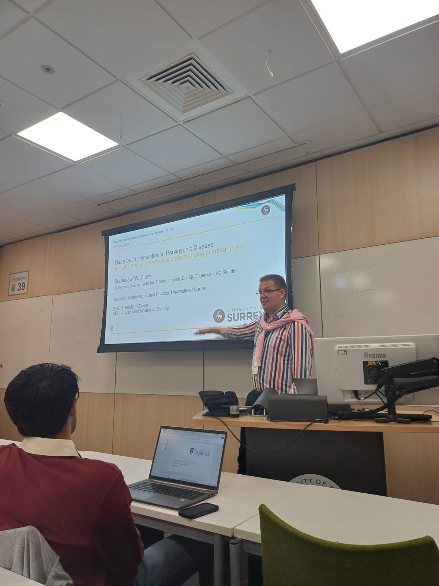
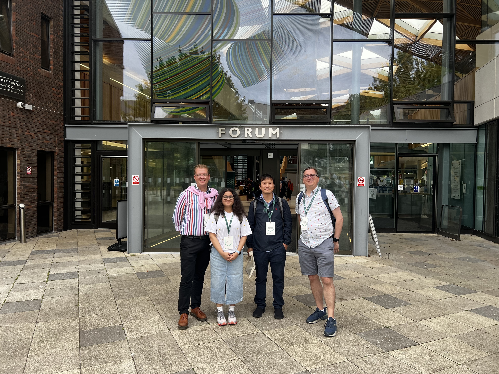

Back to Blog
18th November 2025
I promised some time ago to write a few words about BAMC, which has become one of my regular events in the annual calendar. Long overdue, but here it is.
First, let me unwrap the acronym. BAMC -- British Applied Mathematics Colloquium is an annual event which changes its venue every year. I have first attended it in 2021, when it was held in "Glasgow" -- the inverted commas are required there, as the event took place virtually. Even then, despite my overall dislike towards online events, it proved to be very useful, allowing me to make connections that served me later on in my career.
And networking is probably one of the most notable aspects of the BAMC meetings. Some might read it as "doing everything, but science". While the social aspect outside of the conference programme is rich at BAMC, I must say that the scientific connections are equally strong. In my humble opinion, this is the way to interact with the UK applied mathematics community, to build it, to spot the new arrivals and notice the new problems. This is how I met people, who later became my PhD examiners, and how I got to know people working in a similar field to me.
Being still in the early stages of my career, BAMC has been vital at introducing myself, presenting my research and gaining feedback. It has made it a lot easier for me to search and find appropriate postdoc positions. In general, BAMC celebrates people at the early stages of their careers, allows them to make their first mistakes without humiliation and gain invaluable responses from the scientific community. A few years ago someone tried to shake it up, and confronted one of the presenters in a rather rude manner -- not only were they told that was inappropriate, they were asked to leave the conference for the way in which they spoke. Conferences are a daily bread to academics, which means we need environments in which presenting is not unreasonably stressful. BAMC is one such opportunity.
A quick summary of my activity at the BAMC this year. Every five years, BAMC is joint with the British Mathematical Colloquium, which normally discusses the advances in the field of pure mathematics. The joint events are longer (spanning over 4 days), which was the case this year in Exeter. Hats off to the organisers for a very well arranged conference! I was invited to give a talk at a mini-symposium on Oscillator Models in Biology, and you can find a photo from that below.
It might still be some time away, but I am already looking forward to BAMC 2026, hosted by the University of East Anglia in Norwich!


σβ
Last updated: 18th November 2025
Back to Blog